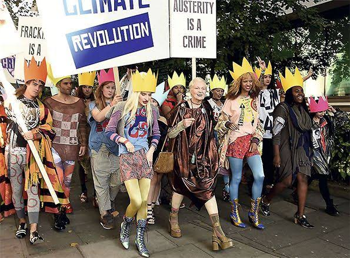

Activismo
Revolución Climática representa el corazón ideológico de Vivienne Westwood, consolidando una plataforma donde la moda de alta costura se transforma de manera explícita en un vehículo de activismo político, defensa de los derechos humanos y resistencia ambiental frente al consumismo desmedido. Para la diseñadora británica, el éxito comercial de su firma nunca tuvo sentido si no se utilizaba como un altavoz global para sacudir conciencias, una filosofía que hoy guía a la marca a través de su cruzada contra el cambio climático y la destrucción de los ecosistemas planetarios. El pilar fundamental de esta visión se sintetiza en su célebre manifiesto "Compra menos, elige bien, hazlo durar" ("Buy less, choose well, make it last"), una declaración de principios que desafía deliberadamente las bases de la moda rápida convencional y promueve un modelo de consumo consciente y ético. A nivel de producción y diseño, este compromiso se traduce en un esfuerzo continuo por mitigar el impacto ambiental de la industria textil mediante la reducción drástica de colecciones comerciales anuales, la eliminación total del plástico virgen en sus empaques y la rigurosa selección de materiales sostenibles como el algodón orgánico certificado, el lino ecológico, la lana regenerada y los metales reciclados para su joyería. Además, la casa de moda colabora estrechamente con la Vivienne Westwood Foundation y ONGs globales para proteger santuarios ecológicos como el Ártico y las selvas tropicales de la Amazonía, impulsando paralelamente la iniciativa Made in Kenya en asociación con la Ethical Fashion Initiative, un proyecto de comercio justo que empodera a comunidades de artesanos locales mediante la fabricación de bolsos y accesorios con materiales reciclados. De este modo, la marca demuestra que la verdadera vanguardia no reside únicamente en la belleza estética de las siluetas, sino en la responsabilidad social y ecológica que se esconde detrás de cada costura, convirtiendo a cada prenda en un manifiesto activo por la supervivencia del planeta.
